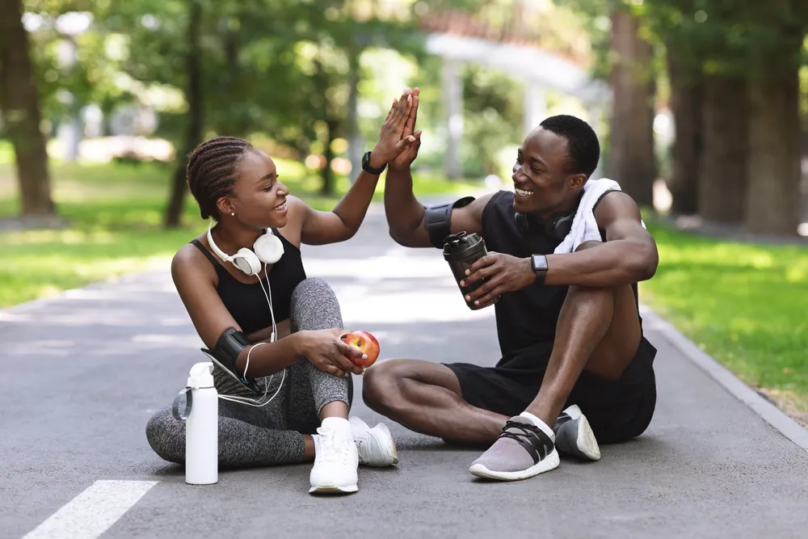

Feeling Out of Shape? Easy Ways to Get Moving Again

- Losing muscle strength and cardio fitness happens quickly with noticeable changes occurring in just 4-weeks of inactivity.
- Thankfully you can also regain your strength quite quickly due to muscle memory.
- To get moving again it’s important to set realistic and achievable goals and to start slowly.
- Switching up your workouts, tracking your achievements, and finding a fitness partner can help keep you motivated.
Whether you’ve taken a long hiatus from the gym, or just a short break, getting back into a routine is not always easy. And unfortunately, losing muscle strength and cardio fitness happens quickly. In just 3 to 4-weeks of inactivity, you can start losing muscle. An athlete’s cardio endurance decreases between 4 to 25-percent and beginners may find their endurance is back to zero after a 4-week break, explains Healthline .
The good news is, thanks to muscle memory, you can regain your strength quite quickly. This is especially true for individuals who were consistent with their workouts before taking a break. So if you’re sick and tired of feeling out of shape, check out these easy ways to get moving again.
Set Realistic and Achievable Goals
Before jumping back into a fitness routine, it’s important to set goals to hold yourself accountable. The key here is making them realistic and achievable. If you set unrealistic goals you can set yourself up for failure which may cause you to call it quits all over again.
When setting goals think about SMART goals: specific, measurable, attainable, relevant, and timely. Setting specific goals such as “I want to bench 100-pounds in 6-months,” or “I want to run 5-miles in 1-hour, 6-months from now” will help you build out a plan to achieve those goals in a timely manner. It’s also important to check in with your goals weekly or monthly to ensure you’re progressing. If not, ask yourself what changes do you need to make to meet your goals?
Mark Your Workouts on the Calendar
After you’ve established your goals you’re going to have to hold yourself accountable. One way to do that is to mark your exercise days on the calendar. You don’t have to commit to working out 7-days a week either. Start by scheduling two to three workouts per week.
It might be a good idea to schedule these workout days on Sunday before your week gets busy and before you have a chance to come up with a list of excuses to skip your workouts. Be sure to schedule a time too so you can block out that time and devote it to fitness.
Start Slowly
After taking a workout hiatus, it’s important to start slowly and change up your workouts frequently. Starting slowly will help your body adjust, and changing your workouts will keep things interesting and prevent boredom.
One way you can ease back into cardio exercise is to do interval training. This involves raising the intensity, speed, or incline for one minute, and then reducing the intensity for two minutes to allow your body to recover. You can repeat these intervals for 30-minutes or however long you planned your workout. After a week or two, you can start increasing the intensity and duration.
Safety Tips
Starting slowly isn’t the only safety tip to consider. Proper warm-ups and cooldowns are important too, especially if you want to prevent injuries, says Self . They can also help delayed onset muscle soreness, also known as DOMS .
Physical therapist Karena Wu, explains to Self, “a good warm-up preps your body for the increase in activity and a cool-down allows your heart rate to return to a normal resting rate.” While warming up and a cool-down session won’t prevent sore muscles entirely, it can help reduce some of the soreness.
The source says another safety tip to consider is good form. Taking your exercises slow and focusing on your form is another way to help prevent injury. Remember, quality over quantity.
How to Get Moving During Work
Getting back into the swing of things doesn’t have to start with intense workouts . You can get moving again by taking lots of breaks during the day and moving your body. If you work at a desk for most of the day, take 10-minutes of your lunch break and go for a walk.
Get up at least once every couple of hours even if it’s just to get up and get a glass of water, use the restroom, or to do a quick stretch. You can also consider scheduling a walking meeting with a coworker. Taking the stairs instead of the elevator, or parking further away from work, and walking the extra distance are other small and easy ways to get your body moving again.
Don’t Forget About Rest Days
As you get your body moving again, it’s important to take proper rest days. Self explains that even though you take a day off from working out, your body does not. During your rest day, your body is repairing and replenishing itself after working hard.
There are two types of rest days, active rest days and passive rest days. Active rest days mean you still do some form of active movement such as going for a leisurely walk, swim, bike ride, or stretching. A passive rest day means you don’t do any form of exercise and allow yourself to lay on the couch or in bed. Both types of rest days are needed, so listen to your body. If you’re not feeling overly exhausted, opt for an active rest day but if you’re feeling depleted, odds are your body really needs the rest.
Take Advantage of Free Online Workouts
You don’t have to commit to a gym membership to get moving again. Take advantage of free workouts online by browsing Youtube. There are also tons of fitness apps that can help you get moving too. Better yet, you can do these exercises in the comfort of your own home and on your own schedule.
As we briefly mentioned, it is also important to add variety to your workout rotation. This will prevent boredom and help you hit different muscle groups. Remember, exercise should be fun, something you enjoy and get to do, not a punishment!
The Importance of Fuel
Fueling your body is just as important as finding the motivation to get your body moving again. Eating the right foods and drinking plenty of water is essential for building muscle and fueling your workouts.
Focus on eating a good balance of protein, carbs, healthy fats, and loads of fruits of veggies with each meal. Don’t forget to drink water! While the daily recommendation may fluctuate among sources, certain factors require you to modify your total fluid intake such as your activity level, your environment, overall health, and whether you’re pregnant or breastfeeding.
According to the National Academies of Sciences Engineering Medicine, the general recommendations are 11.5-cups (2.7-liters) of total water daily for women and 15.5-cups (3.7-liters) of water for men. The source also notes about 80-percent of total water comes from beverages and 20-percent is derived from food.
Prep the Night Before
Another way you can help your routine is to prep the night before. This includes filling your gym bag with everything you need for your workout and prepping your meals. Setting yourself up for success can help prevent you from giving in to excuses the following day. If you don’t work out until after work Women’s Running says the same rules apply. Having your gym bag at your desk will “act as a good reminder of what you have committed to and you will be less likely to back out,” explains the source.
If you work out at home, you can still prepare the night before! Browse the at-home workouts online and pre-select which workout you’re going to accomplish the next day. This way when you wake up and are ready to work out, all you have to do is hit play.
Find a Fitness Partner
Another great way to get moving again is to find a fitness partner. Not everyone enjoys working out by themselves and some even find it more motivating to workout with a friend. Not to mention, a fitness partner can help keep you accountable.
A 12-month study examined married individuals and found that married pairs who attended the gym had significantly higher attendance and lower dropout rates compared to married singles. Spousal support had a greater influence than self-motivation. The Daily Burn also notes another study that concluded “people who joined the gym solo had a 43 percent dropout rate over the course of the year. Meanwhile, those who went to the gym in pairs only had a 6.3 percent dropout rate.” So, if you’re worried about calling it quits again, find a fitness partner and keep each other accountable!
How to Stay Motivated
Creating a fitness routine and scheduling it on your calendar is just the start but staying motivated is a whole other thing. If you don’t see results right away it can get frustrating and you might even be tempted to give up. This is why it’s important to have a few motivational tips in your back pocket that you can pull out when you feel like you’re in a slump.
Healthline says the first thing is to make sure you choose activities that you actually like to do. If you hate running, don’t run. Perhaps you prefer swimming laps, playing sports, or lifting weights. There are so many different forms of exercise to choose from.
Second, don’t give up too easily. The source compares your fitness journey to college. You don’t graduate in just a few months, right? Getting back into shape is going to take more than a few workout sessions. Consistency really is key. Finally, always come back to your “why”. Remind yourself why you want to move your body and focus on that reason to stay motivated.
Celebrate Your Accomplishments
Now that you’re starting to make fitness a habit again don’t forget to celebrate your accomplishments! Did you lift 5-pounds heavier than last week? Or run an extra mile in less time? Or perhaps, you didn’t miss a workout for a whole week! Big or small, it’s worth celebrating.
Celebrating your accomplishments is not only rewarding but can help keep you motivated. Finally, be sure to record all your accomplishments in a journal so you can track your progression. You might even want to start taking pictures. Visual changes can help keep you motivated too.
Source: https://activebeat.com/fitness/feeling-out-of-shape-easy-ways-to-get-moving-again/